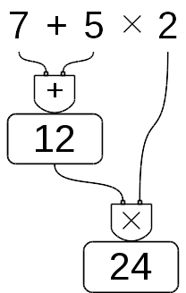
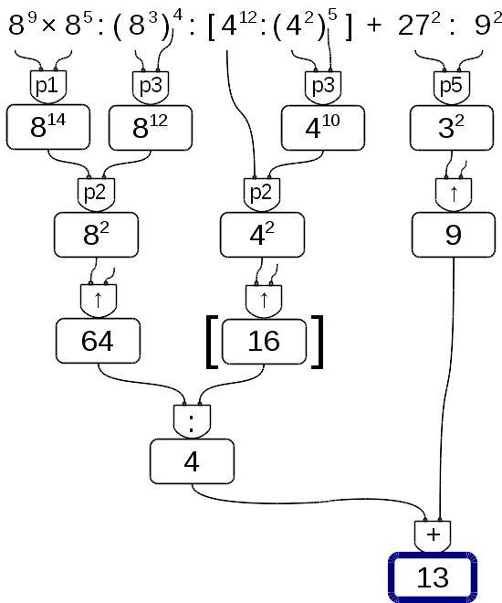
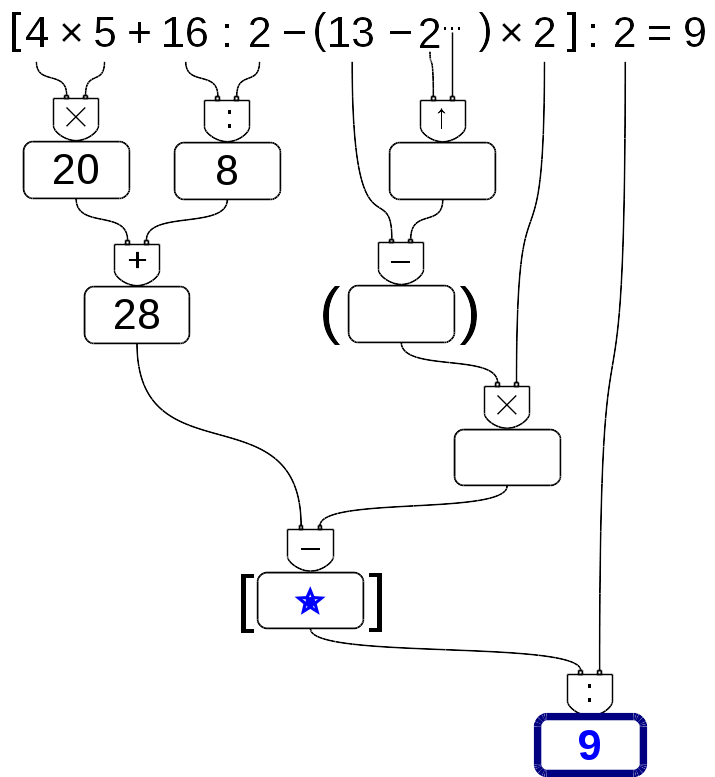
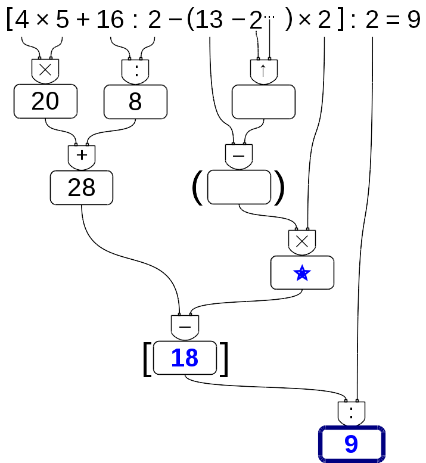
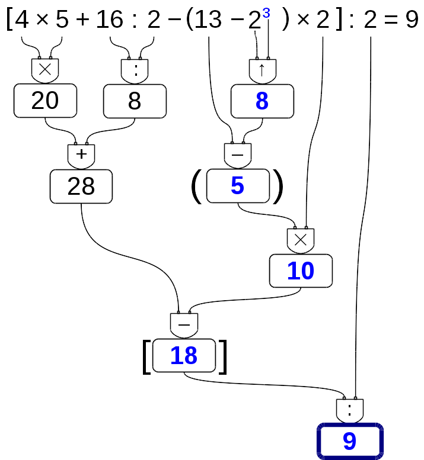
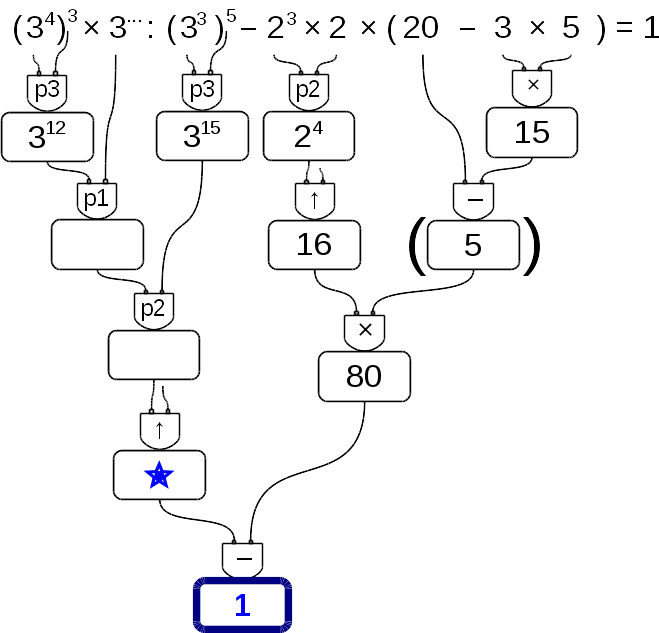

“One door, one key…”
Foto di Silv3rFoX
http://www.flickr.com/photos/12030514@N08/2272118558/
Licenza: Creative Commons Attribution
L’origine del sistema dei numeri naturali si perde nella notte dei tempi. Non abbiamo documenti sufficienti per capire come l’uomo li abbia costruiti o scoperti; è possibile che il nostro sistema di numerazione sia nato contemporaneamente al linguaggio stesso della specie umana. Sono stati ritrovati reperti fossili risalenti a più di trentamila anni fa, recanti delle incisioni a distanza regolare. In particolare, è stato ritrovato un osso di babbuino, detto Osso di Ishango (figura 1.1) 1 in quanto è stato rinvenuto presso la città di Ishango nel Congo tra il Nilo e il lago Edoardo, che riporta delle tacche disposte in modo tale da farci pensare che rappresentino dei numeri o dei calcoli. L’osso risale a un periodo tra il 20 000 a.C. e il 18 000 a.C.

Possiamo immaginare che i pastori per contare i capi del proprio gregge, facessero delle tacche su dei bastoni mano a mano che le pecore entravano nel recinto una alla volta: una tacca per ogni pecora. Tuttavia, questo metodo di associazione uno ad uno (una tacca per una pecora) non è efficace per greggi, o gruppi di oggetti, di grandi dimensioni. Si immagini, per esempio, la difficoltà di tracciare cinquecento tacche su un bastone. È possibile allora che, per rappresentare numeri grandi, si siano cominciati a usare simboli specifici che richiamassero alla mente i numeri grandi e che contemporaneamente siano state fissate alcune regole per associare questi simboli.
Sappiamo per certo che circa 6 000 anni fa gli antichi Egizi scrivevano, incidendo sulla pietra, i numeri utilizzando geroglifici per le potenze di 10:

Ripetendo questi simboli è possibile scrivere, per esempio, il numero 3673 così:

I Romani usavano invece sette simboli con i quali, seguendo determinate regole, rappresentavano qualunque numero. I simboli sono \(I=1\), \(V=5\), \(X=10\), \(L=50\), \(C=100\), \(D=500\), \(M=1000\). Il numero \(MM\) rappresenta \(~1000+1000 =~2000\); il numero \( VI\) rappresenta \(~5+1=6~\), mentre il numero \( IV~\) rappresenta \(~5-1=4~\).
I primi numeri che abbiamo usato sin da bambini per contare gli oggetti o le persone si chiamano numeri naturali \[ 0, 1, 2, 3, 4, 5, 6, 7, 8, 9, 10, 11, 12, 13, \dots \] L’insieme di tutti questi numeri si indica con la lettera \(\N \).
Cosa hanno in comune le dita di una mano, con 5 mele, 5 penne, 5 sedie? Evidentemente il numero 5. Una caratteristica cioè che è comune a tutti gli insiemi formati da 5 oggetti. Questa caratteristica può essere vista come un oggetto a sé stante, un oggetto astratto di tipo matematico.
Ma i numeri naturali non servono solo per indicare quanti oggetti ci sono (aspetto cardinale del numero), vengono usati anche per rappresentare l’ordine con cui si presentano gli oggetti, (aspetto ordinale), l’ordine per esempio con cui i corridori arrivano al traguardo: primo, secondo, terzo, …
Nonostante i numeri naturali e le operazioni su di essi ci vengano insegnati fin da piccoli, e nonostante l’umanità li usi da tempi antichissimi una loro piena comprensione non è semplice, come dimostra il fatto che ancora oggi i matematici ne discutono. Il dibattito su cosa sono i numeri e su cosa si fondano è stato particolarmente animato nei primi decenni del \(XX\) secolo, quando ne hanno discusso matematici e filosofi come Frege, Peano, Russell, Hilbert e tanti altri. Oggi ci sono diversi punti di vista.
I numeri naturali sono alla base dell’aritmetica, tutti gli altri numeri si possono costruire a partire da questi. Chiederci cosa sono i numeri naturali non è una domanda da poco, è domandarsi che cosa sono quegli oggetti su cui poggia una gran parte della matematica.
Per definire i numeri naturali dobbiamo partire da alcuni concetti primitivi. I concetti primitivi sono dei concetti che decidiamo di non definire e che siamo tutti d’accordo di ritenere conosciuti.
I concetti primitivi per definire i numeri naturali sono:
Lo zero è il numero che serve per contare gli elementi di un insieme con il minore numero di elementi possibile: l’insieme vuoto.
Il successore di un numero naturale \(n\) è quel numero che viene subito dopo \(n\).
Quindi se siamo d’accordo su questi due concetti di base, possiamo definire i numeri naturali come un insieme nel quale valgono le seguenti proprietà:
In pratica i numeri naturali sono la sequenza:
zero, uno, due, tre, ... centoventitre, centoventiquattro, ...
Un modo comodo per esprimere qualunque numero naturale è usare dei segni appositi, le cifre, e un sistema per rappresentarli:
0, 1, 2, 3, ... 123, 124, ...
Il modo di scrivere i numeri dei romani risultava piuttosto complicato sia nella scrittura dei numeri sia nell’esecuzione dei calcoli. Il sistema moderno di scrittura dei numeri fa uso dei soli dieci simboli 0, 1, 2, 3, 4, 5, 6, 7, 8, 9, che vengono detti cifre. Un numero non è altro che una sequenza ordinata di cifre, eventualmente ripetute.
Per rappresentare il numero dieci che segue il 9 non si fa uso di un simbolo diverso ma si scrivono due cifre: il simbolo 1 a sinistra e il simbolo 0 a destra. Per chiarire questo metodo utilizziamo un pallottoliere (figura 1.2) con aste verticali capaci di contenere fino a 9 dischetti: per rappresentare il numero 10 dispongo un dischetto nell’asta a sinistra e vuoto la prima asta: il numero dieci viene rappresentato dalla scrittura 10.

I dischetti sull’ultima asta rappresentano il numero 9; un dischetto sulla penultima rappresenta il numero 10. Per rappresentare il numero cento si fa uso della scrittura 100. Ovvero si sposta il numero 1 ancora a sinistra ponendo uno zero nel posto lasciato vuoto. Questo metodo può essere ripetuto per rappresentare tutti i numeri che risultino potenza di dieci, ovvero dieci, cento, mille…
Le potenze di 10 sono importanti nel sistema decimale poiché rappresentano il peso di ciascuna cifra di cui è composto il numero. Nel pallottoliere ciascuna asta indica una potenza di dieci. Il valore di un numero si ottiene moltiplicando ciascuna cifra per il suo peso e sommando i valori ottenuti.
Per esempio, tre dischetti nella terza asta rappresentano il numero \(~3\cdot 10^2=300\). Il numero \(219\) si rappresenta tenendo conto di questa scrittura \(~2\cdot 10^2+1\cdot 10+9\).
Per quanto detto, il sistema di numerazione che usiamo è:
I numeri naturali possono essere rappresentati su una semiretta: si identifica il numero 0 con l’origine della semiretta, come verso di percorrenza si prende quello da sinistra verso destra e come unità di misura un segmento \(AB\). Si riporta questa unità di misura più volte partendo dall’origine e a ogni passo si va al numero successivo.

Ogni numero naturale si costruisce a partire dal numero 0 e passando di volta in volta al numero successivo: 1 è il successore di 0, 2 è il successore di 1, 3 è il successore di 2, etc. Ogni numero naturale ha il successore e ogni numero, a eccezione di 0, ha il precedente. L’insieme \(\N \) ha 0 come elemento minimo e non ha un elemento massimo.
I numeri rappresentati sulla retta sono sempre più grandi man mano che si procede da sinistra verso destra. Ogni numero è maggiore di tutti i suoi precedenti, quelli che stanno alla sua sinistra, e minore di tutti i suoi successivi, quelli che stanno alla sua destra. Tra i numeri naturali esiste quindi una relazione d’ordine, che si rappresenta con il simbolo di disuguaglianza (\(\le \) si legge “minore o uguale di”) o disuguaglianza stretta (\(<\) si legge “minore di”). Grazie a questo ordinamento, è sempre possibile confrontare due numeri naturali qualsiasi.
Legge 1.1 (di tricotomia). Dati due numeri naturali n, m vale sempre una delle seguenti tre relazioni: \[\quad n > m,\quad n < m,\quad n = m\]
Possiamo vedere le operazioni matematiche come dei meccanismi, delle regole, che associano ad alcuni oggetti matematici, detti operandi, un altro oggetto matematico, il risultato.
Di seguito riprendiamo rapidamente le prime cinque operazioni aritmetiche nei numeri naturali.
Prima di affrontare le operazioni introduciamo uno dei concetti più importanti nella matematica moderna: il concetto di funzione.
Definizione 1.1. Chiamiamo funzione un qualunque procedimento che, a partire da alcuni oggetti che sono gli argomenti, ne produce uno che è il risultato della funzione.
Anche le operazioni aritmetiche possono essere viste come particolari funzioni. Sono delle funzioni binarie perché hanno due argomenti e, ovviamente, un risultato.
Data l’importanza delle funzioni e il loro uso in molti contesti diversi, vengono anche usati molti modi diversi per rappresentarle. Di seguito ne vediamo alcuni dove applichiamo la rappresentazione al caso dell’addizione. \[somma = add \coppia {o_1}{o_2} \] \[somma: \coppia {o_1}{o_2} \mapsto o_1 + o_2\]
Possono essere usate anche delle rappresentazioni grafiche:
Funzione rappresentata con grafi


Rappresentazioni dell’espressione:
\(7 + 5 = 12\)


Una funzione può anche essere definita in un linguaggio di programmazione (nel caso sequente usiamo Python):
Interpretazione di queste due righe di programma:
“add”
è il nome della funzione;
“o_1” e “o_2”
sono i parametri della funzione;
l’espressione che segue la parola “return”
è il risultato della funzione;
“def” e “return”
sono delle parole riservate del linguaggio Python.
La funzione qui definita ha due parametri.
Il risultato della funzione può essere visualizzato con la seguente istruzione:
“print”
è un comando per visualizzare qualcosa sullo schermo;
“5” e “7”
sono gli argomenti della funzione.
La funzione “add” ha due paramteri (“o_1” e “o_2”) e per eseguirla dobbiamo passarle due argomenti (“5” e “7”).
❑ Osservazione Queste prime funzioni che studiamo sono funzioni binarie: il loro argomento è una coppia di numeri mentre il risultato è un solo numero.
Esistono anche funzioni che hanno per argomento più numeri o anche uno solo. Esistono anche funzioni che hanno come risultato più numeri.
❑ Osservazione Nell’ambito informatico gli argomenti sono anche detti “input” e il risultato è detto “output” della funzione.
Prima ancora di affrontare le operazioni aritmetiche con i numeri naturali, vediamo le proprietà delle operazioni in generale. In generale vuol dire che ora non stiamo a precisare né di quale insieme numerico parliamo, né di quale operazione. Quindi useremo delle lettere per indicare operandi e risultato mentre, per l’operazione, useremo un simbolo diverso da quelli delle quattro operazioni. Diremo che:
Vediamo ora alcune operazioni con i numeri naturali e le loro proprietà.
L’addizione è collegata all’operazione concreta di aggiungere gli elementi di un gruppo di oggetti agli elementi di un altro gruppo.
Definizione 1.2. Dati due numeri naturali \(n\) e \(m\), l’addizione associa un terzo numero \(s\), che si ottiene partendo da \(n\) e procedendo verso i successori \(m\) volte. Si scrive \(n+m=s\).
Ad esempio: sommare 5 a 3 significa partire da 3 e spostarsi verso il successivo per 5 volte.
\(3+5=8\)

Gli operandi dell’addizione si chiamano addendi e il risultato si chiama somma.
❑ Osservazione Per definire l’addizione abbiamo utilizzato il concetto di successore.
L’addizione è una funzione che ha come argomento una coppia qualsiasi di numeri naturali e dà come risultato un numero naturale:


Per come è definita, e dato che il successore di un numero naturale è un numero naturale, l’addizione tra due numeri naturali qualsiasi è sempre un numero naturale. Si dice che è una legge di composizione interna.
Nei numeri naturali l’addizione presenta le seguenti proprietà:
La sottrazione è collegata all’operazione concreta di togliere degli oggetti da un gruppo di oggetti.
Definizione 1.3. Dati due numeri naturali \(m\) e \(n\), la sottrazione associa un terzo numero naturale \(d\), se esiste, che aggiunto ad \(n\) dà come somma \(m\). Si scrive \(m - n = d\).
Ad esempio: togliere 5 da 7 significa partire da 7 e spostarsi verso il precedente per 5 volte.
\(7-5=2\) perché \(2+5=7\)

Il primo operando si chiama minuendo, il secondo sottraendo e il risultato differenza.
La sottrazione è l’operazione inversa dell’addizione.
Se al concetto di successore aggiungiamo anche quello di precedente, possiamo definire la sottrazione anche in un altro modo. Ritornando alla rappresentazione dei numeri naturali sulla semiretta orientata, la differenza tra i numeri 7 e 5 si può trovare partendo da 7 e procedendo a ritroso di 5 posizioni.
Diventa allora evidente perché non è possibile trovare la differenza tra 5 e 7, infatti se partendo dal 5 andiamo indietro di 7 posizioni usciamo dalla semiretta dei numeri naturali.

Si può osservare allora che in \(\N \) la sottrazione \(a - b\) è possibile solo se \(b\leq a\).
La sottrazione è una funzione che ha come argomento una coppia ordinata di numeri naturali e dà come risultato un numero naturale:


La sottrazione non è una legge di composizione interna ai numeri naturali dato che alcune sottrazioni non danno come risultato un numero naturale.
Non è commutativa né associativa e non ha neppure un elemento neutro. Possiamo dire che ha solo l’elemento neutro a destra infatti \(a - 0 = a\), ma in generale non si può fare \(0 - a\).
Una proprietà interessante della sottrazione è la proprietà
Definizione 1.4. Aggiungendo o togliendo ad entrambi i termini di una sottrazione la stessa quantità la differenza non cambia.
La moltiplicazione è legata all’azione di contare oggetti disposti in uno schieramento rettangolare.
Definizione 1.5. Dati due numeri naturali \(m\), \(n\), l’operazione di moltiplicazione associa un terzo numero \(p\) che si ottiene sommando \(n\) addendi tutti uguali a \(m\):
\[m \times n = \underbrace {m + m + \dots + m}_{\text {n volte}} = p\]
Ma questa definizione è sensata solo nel caso \(n\) sia un numero naturale maggiore di 1. Quindi dobbiamo completarla:
Definizione 1.6. \[ m \times n = \sistema { 0 & se \quad n = 0\\ m & se \quad n = 1\\ \underbrace {m + m + \dots + m}_{\text {n volte}} & \mbox { negli altri casi} }\]
Ad esempio: moltiplicare 3 per 4 volte significa partire da 0 e aggiungere 3 per 4 volte.
\(3 \cdot 4 = 3 + 3 + 3 + 3 = 12\)
Gli operandi della moltiplicazione si chiamano fattori e il risultato si chiama prodotto.
La moltiplicazione è una funzione che ha come argomento una coppia qualsiasi di numeri naturali e dà come risultato un numero naturale:


Dato che per eseguire una moltiplicazione ripeto delle addizioni, anche il prodotto di due numeri naturali qualsiasi è sempre un numero naturale. Si dice che la moltiplicazione è una legge di composizione interna ai naturali.
Nei numeri naturali la moltiplicazione presenta le seguenti proprietà:
Un’altra importante proprietà che utilizzeremo spesso anche in seguito è la:
Legge 1.2 (Legge di annullamento del Prodotto:). il prodotto di due o più numeri naturali si annulla se e solo se almeno uno dei fattori è nullo. \[ a\cdot b=0\Leftrightarrow a=0\text { oppure }b=0. \]
Questa legge dice che se il risultato di una moltiplicazione è zero di sicuro almeno uno dei fattori deve essere zero. Attenzione: questa proprietà non vale per tutti gli insiemi numerici in cui è definita la moltiplicazione.
La divisione è collegata all’operazione concreta di dividere una certa quantità di oggetti in gruppi con lo stesso numero di oggetti.
Definizione 1.7. Dati due numeri naturali \(m\) e \(n\), con \(n \neq 0\), la divisione associa un terzo numero naturale \(q\), se esiste, che moltiplicato per ad \(n\) dà come prodotto \(m\). Si scrive \(m : n = q\).
Ad esempio: dividere 12 per 4 significa trovare quante volte il numero 4 è contenuto nel numero 12.
\(12 : 4 = 3\) perché \(3 \cdot 4 = 12\)
Il primo operando si chiama dividendo e il secondo divisore, il risultato si dice quoziente esatto.
Non sempre si può effettuare la divisione nei numeri naturali ad esempio: \(10 : 4 =\) non è un numero naturale. Se esiste il quoziente esatto tra i numeri \(m\) e \(n\), si dice che:
❑ Osservazione Nella definizione di quoziente abbiamo richiesto che il divisore sia diverso da zero. In effetti, se il divisore è 0 non c’è nessun numero che moltiplicato per 0 ci possa dare un dividendo diverso da zero. Per esempio, nella divisione \(5:0\) dobbiamo ottenere un numero che moltiplicato per 0 dia 5; ciò non è possibile in quanto qualsiasi numero moltiplicato per 0 dà 0. Invece nella divisione \(0:0\) un qualsiasi numero è adatto come quoziente, infatti qualsiasi numero moltiplicato per 0 dà 0 come prodotto.
Nel linguaggio matematico diciamo che una divisione del tipo \(n:0\), con \(n\neq ~0\), è impossibile; mentre la divisione \(0:0\) è indeterminata.
La divisione è una funzione che ha come argomento una coppia ordinata di numeri naturali e dà come risultato un numero naturale:


Dato che non dà sempre un risultato, la divisione non è una legge di composizione interna ai numeri naturali.
Non è commutativa né associativa e non ha neppure un elemento neutro. Possiamo dire che ha solo l’elemento neutro a destra infatti \(a : 1 = a\), ma in generale non si può fare \(1 : a\).
L’unica proprietà interessante della divisione è la proprietà
Definizione 1.8. Moltiplicando o dividendo entrambi i termini di una divisione per la stessa quantità, diversa da zero, il quoziente non cambia.
Oltre alle proprietà valide per le singole operazioni, ce n’è una che riguarda due operazioni contemporaneamente, è la proprietà distributiva.
Rispetto all’addizione Moltiplicare il risultato dell’addizione di più numeri per un altro numero dà lo stesso risultato che moltiplicare ogni addendo per il fattore e addizionare i prodotti ottenuti. Questa proprietà vale sia se la somma è a destra sia se è a sinistra.
\(a \cdot (b+c) = a \cdot b + a \cdot c\)
\((a+b) \cdot c = a \cdot c + b \cdot c\)
\(32 = 8 \cdot 4 = (3+5) \cdot 4 = 3 \cdot 4 + 5 \cdot 4 = 12 + 20 = 32\)
Rispetto alla sottrazione In maniera analoga:
\(a\cdot (b-c) = a\cdot b - a\cdot c\)
\((a-b)\cdot c = a\cdot c - b\cdot c\)
\(15 = 3 \cdot 5 = (7-4) \cdot 5 = 7\cdot 5 - 4\cdot 5 = 35 - 20 = 15\)
Rispetto all’addizione Solo se le somme sono a sinistra:
\((a+b): c=a:c+b:c\)
Verifichiamo con un esempio che non vale la proprietà distributiva se le somme si trovano a destra: \(120:(3+5)\). Eseguendo prima l’operazione tra parentesi si ottiene correttamente \(120:8=15\). Se si prova ad applicare la proprietà distributiva si ottiene \(120:3+120:5=40+24=64\). Il risultato corretto è il primo.
Rispetto alla sottrazione Solo se la sottrazione è a sinistra:
\((a-b):c=a:c-b:c\)
Se, però, la sottrazione è a destra: \[120:(5-3)=120:2=60\neq ~120:5-120:3=24-40=\text { non si può fare.}\]
La potenza di un numero naturale è una moltiplicazione che ha tutti i fattori uguali.
Definizione 1.9. Dati due numeri naturali \(b\), \(e\), l’operazione di potenza associa un terzo numero \(p\) che si ottiene moltiplicando \(e\) fattori tutti uguali a \(b\): \[b^e = \underbrace {b \cdot b \cdot \dots \cdot b}_{\text {e volte}} = p\]
Ma questa definizione è sensata solo nel caso \(e\) sia maggiore di 1. Quindi dobbiamo completarla:
Definizione 1.10. \[ b^e = \begin {cases} 1 & se \quad e = 0 \text { e } b\neq 0\\ b & se \quad e = 1\\ \underbrace {b \cdot b \cdot \dots \cdot b}_{\text {e volte}} & \text { negli altri casi} \end {cases}\]

Gli operandi si chiamano base e esponente mentre il risultato si chiama potenza.
Da osservare che \(0^0\) non è definito.
La potenza è una funzione che ha come argomento una coppia ordinata di numeri naturali e dà come risultato un numero naturale:


1. Il prodotto di più potenze con la stessa base è una potenza che ha per base la stessa base e per esponente la somma degli esponenti.
\[\boxed {a^m \cdot a^n = a^{m+n}}\]
2. Il quoziente di due potenze con la stessa base è una potenza che ha per base la stessa base e per esponente la differenza degli esponenti.
\[\boxed {a^m : a^n = a^{m-n}}\]
\begin {align*} a^m: a^n &= \frac {a^m}{a^n}= \frac {\overbrace {\cancel {a} \cdot \cancel {a} \cdot \cancel {a} \cdot \ldots \cdot a}^{m \text { volte}}} {\underbrace {\cancel {a} \cdot \cancel {a} \cdot \ldots \cdot \cancel {a}}_{n \text { volte}}}= a^{m-n} \end {align*}
3. La potenza di una potenza è una potenza che ha per base la stessa base e per esponente il prodotto degli esponenti.
\[\boxed {(a^m)^n=a^{m \cdot n}}\]
4. Il prodotto di più potenze con lo stesso esponente è una potenza che ha per base il prodotto delle basi e per esponente lo stesso esponente.
\[\boxed {a^n\cdot b^n=(a\cdot b)^n}\]
5. Il quoziente di due potenze con lo stesso esponente è una potenza che ha per base il quoziente delle basi e per esponente lo stesso esponente.
\[\boxed {a^n:b^n=(a:b)^n}\]
Volendo far valere sempre le proprietà delle potenze, i casi particolari della definizione di potenza si giustificano nel seguente modo:
\begin {align*} &a^0=a^{n-n}=a^n:a^n=1\\ es.:\quad &4^0 = 4^{3-3} = 4^3 : 4^3 = 64 : 64 = 1 \end {align*}
\begin {align*} &a^1=a^{n-(n-1)} = a^n : a^{(n-1)} = a\\ es.:\quad &8^1 = 8^{4-3} = \frac {\cancel {8} \cdot \cancel {8} \cdot \cancel {8} \cdot 8} {\cancel {8} \cdot \cancel {8} \cdot \cancel {8}} = 8 \end {align*}
❑ Osservazione Alla potenza \(0^0\) non si assegna alcun valore perché applicando la definizione di \(a^0\) si dovrebbe ottenere 1; applicando la definizione \(0^a\) si dovrebbe ottenere 0. Nonostante ciò, in molti linguaggi di programmazione: \(0^0 = 1\).
Spesso in matematica abbiamo a che fare con più operazioni combinate assieme. In questo caso parliamo di espressioni:
Definizione 1.11. Un’espressione aritmetica è un modo per rappresentare una successione di operazioni.
Nel linguaggio comune alcune frasi possono risultare ambigue. Per esempio «Luca ha detto Mario è stato promosso» può avere due significati diversi a seconda di come si inserisce la punteggiatura: scrivendo «Luca, ha detto Mario, è stato promosso» significa che è stato promosso Luca; scrivendo «Luca ha detto: Mario è stato promosso» significa che è stato promosso Mario.
Anche nella matematica, quando abbiamo più operazioni da eseguire, dobbiamo chiarire l’ordine con cui si devono eseguire le operazioni. Per esempio, l’espressione \(7+5\cdot 2\) può valere 24 oppure 17, infatti: se eseguiamo le operazioni da sinistra verso destra otteniamo un risultato, se eseguiamo prima la moltiplicazione ne otteniamo un altro. La regola più semplice sarebbe "eseguire da sinistra a destra", ma i matematici hanno scoperto che risulta più comodo eseguire prima le moltiplicazioni e dopo le addizioni. (vedi figura 1.4).

❑ Osservazione Alcune calcolatrici, quelle “aritmetiche” svolgono le operazioni man mano che sono inserite, si dice che applicano l’associatività a sinistra. Altre, le calcolatrici “scientifiche” seguono le regole dell’algebra. Esegui la seguente sequenza di operazioni sulla tua calcolatrice (le barre verticali separano i diversi tasti da premere):
|7|+|5|Œ|2|=|
Osserva il risultato e confrontalo poi con quello ottenuto dai tuoi compagni. Diverse calcolatrici possono fornire risultati diversi (mai fidarsi delle macchine).
La precedenza algebrica prevede che:
Risolviamo le espressioni con i numeri naturali usando grafi ad albero; gli operandi sono le foglie dell’albero, il risultato è la radice. Costruiamo il grafo tenendo conto delle seguenti indicazioni:
Procedura 1.3. Per risolvere un’espressione usando un grafo:
Esempio 1.3. \(8^9 \times 8^5 : (8^3)^4 : [4^{12} : (4^2)^5] + 27^2 : 9^2 =\)
Se per risolvere un’espressione dobbiamo utilizzare le proprietà delle potenze, al posto del simbolo di operazione scriveremo le sigle “p1”, “p2”, …per indicare l’uso della prima, seconda, …quinta proprietà.

In alcuni casi può non essere comodo, o praticabile, l’uso di un grafo ad albero per risolvere espressioni. Vediamo allora il metodo sequenziale che prevede di copiare tutta o in parte l’espressione rendendola via via più semplice. Possiamo applicare le seguenti indicazioni:
Procedura 1.4. Per risolvere un’espressione in modo sequenziale:
Partiamo da una nuova espressione:
\(2 + 6 \times 2 \div \left [ \left (4 -2 \right ) \times 3^{2} - 3 \times 5 \right ] + \left ( 5^{2} + 2^{3} \right ) \div 3 =\)
Scorrendo l’espressione vediamo che l’operazione \(2 + 6\) è seguita da una moltiplicazione; poiché la moltiplicazione ha la precedenza sull’addizione, non possiamo eseguire \(2 + 6\). La prossima espressione che incontriamo è \(6 \times 2\) dato che è seguita da una divisione possiamo eseguirla e quindi la sottolineiamo. Procediamo così sottolineando tutte le operazioni che possiamo eseguire, a questo punto della soluzione, rispettando le precedenze algebriche:
Sottolineo: \(2 + \underline {6 \times 2} \div \left [ \underline {\left (4 -2 \right )} \times \underline {3^{2}} - \underline {3 \times 5} \right ] + \left ( \underline {5^{2}} + \underline {2^{3}} \right ) \div 3 =\)
Ricopiamo l’espressione sostituendo al posto delle operazioni sottolineate il loro risultato:
Eseguo: \(= 2 + 12 \div \left [ 2 \times 9 - 15 \right | + \left ( 25 + 8 \right ) \div 3 =\)
Otteniamo così un’espressione a cui applicare nuovamente i due passi precedenti fino ad averla ridotta ad un numero. \begin {align*} \text {Sottolineo: } \qquad &= 2 + 12 \div \left [ \underline {2 \times 9} - 15 \right | + \underline {\left ( 25 + 8 \right )} \div 3 = \hspace {20mm}\\ \text {Eseguo: } \qquad &= 2 + 12 \div \left [ 18 - 15 \right | + 33 \div 3 =\\ \text {Sottolineo: } \qquad &= 2 + 12 \div \underline {\left [ 18 - 15 \right |} + \underline {33 \div 3} = \\ \text {Eseguo: } \qquad &= 2 + 12 \div 3 + 11 = \\ \text {Sottolineo: } \qquad &= 2 + \underline {12 \div 3} + 11 = \\ \text {Eseguo: } \qquad &= 2 + 4 + 11 = \\ \text {Sottolineo: } \qquad &= \underline {2 + 4} + 11 = \\ \text {Eseguo: } \qquad &= 6 + 11 = 17 \end {align*}
Nell’ultimo passaggio, essendo rimasta una sola operazione, è inutile sottolinearla. Avremmo anche potuto risolvere con un passaggio in meno calcolando assieme le due addizioni:
\(= 2 + 4 + 11 = 17\)
A volte potrà succedere che, nell’espressione, manchi un numero. Conoscendo il risultato possiamo trovare il numero mancante.
Procedura 1.5. Per trovare l’operando mancante usando il grafo ad albero:
Esempio 1.4. Nella seguente espressione manca un esponente:
\([4 \times 5 + 16 : 2 - (13 - 2^{\dots }) \times 2] : 2 = 9\)
Ora poniamo attenzione al nodo vuoto che precede il risultato, il nodo contrassegnato dalla stella. Dobbiamo trovare il numero che diviso per 2 dia come risultato 9. È facile: il numero cercato è 18. Scriviamo allora 18 in questo nodo e poniamo l’attenzione a quello che lo precede.



Esempio 1.5. Se c’è un “buco” in una espressione da risolvere con le proprietà delle potenze, si procede allo stesso modo:
\((3^4)^3 \times 3^{\dots } : (3^3)^5 -2^3 \times 2 \times (20 -3 \times 5) = 1\)
Costruiamo il grafo risolutivo eseguendo tutte le operazioni possibili. Rimangono vuoti tutti i nodi che collegano la radice all’elemento mancante. Usando un colore diverso, a partire dalla radice, completiamo il grafo. Scriviamo nella radice il risultato dell’espressione, e poniamo attenzione al nodo vuoto che lo precede.

Procedura 1.6. Per trovare l’operando mancante usando il metodo sequenziale:
Esempio 1.6. \(\left [ 4 \times 5 + 16 \div 2 - \left (13 - 2^{\dots } \right ) \times 2 \right ] \div 2 = 9\)
Ora, sostituiamo tutte le operazioni sottolineate con il loro risultato, tutte tranne l’operazione che contiene il buco: il suo risultato sarà un buco.
Ora possiamo risalire: cambiamo colore e…
\(\left [ 20 + 8 - \left (13 - {\dots } \right ) \times 2 \right ] \div 2 = 9\)
\(\left [ \underline {20 + 8} - \underline {\left (13 - {\dots } \right )} \times 2 \right ] \div 2 = 9\)
\(\left [ 28 - \underline {{\dots } \times 2} \right ] \div 2 = 9\)
\(\underline {\left [ 28 - {\dots } \right ]} \div 2 = 9\)
\(\underline {{\dots } \div 2} = 9\)
Esempio 1.7. Possiamo anche risolvere espressioni con il buco dove bisogna applicare le proprietà delle potenze:
\(\underline {\left (3^4 \right )^3} \cdot 3^{\dots } \div \underline {\left (3^3 \right )^5} - \underline {2^{3} \cdot 2} \cdot \left ( 20 - \underline {3 \cdot 5} \right ) =\)
\(\underline {3^{12} \cdot 3^{\dots }} \div 3^{15} - \underline {2^{4}} \cdot \underline {\left ( 20 - 15 \right )} =\)
\(\underline {3^{\dots } \div 3^{15}} - \underline {16 \cdot 5} =\)
\(\underline {3^{\dots }} - 80 =\)
\(\underline {{\dots } - 80} = 1\)
La divisione esatta nei numeri naturali, \(m\) e \(n\), non è sempre possibile: si può fare solo se \(m\) è multiplo di \(n\). Con i numeri naturali però è sempre possibile eseguire la divisione con il resto. La divisione con resto è una funzione che dà due risultati: il quoziente e il resto. Questa è una funzione che ha due argomenti e per risultato una coppia ordinata di numeri.
Definizione 1.12. Dati due numeri naturali \(m\) e \(n\), con \(n\neq ~0\), esistono due numeri \(q\) e \(r\) con \(0 \leqslant r < n\) tali che: \[m = n \cdot q + r\] \(q\) si dice quoziente e \(r\) si dice resto della divisione.

Esempio 1.9. Alcune semplici divisioni con il resto:
Un’operazione che dà due risultati a volte è scomoda quindi i matematici hanno ricavato, dalla divisione con resto, due nuove operazioni: la divisione intera e il modulo.
Definizione 1.13. Dati due numeri naturali \(m\) e \(n\), con \(n\neq ~0\), la divisione intera \(m\divint n\) è l’operazione che dà il più grande numero naturale \(q\) (il quoziente) per il quale si ha \[q\times n\le m\]
Esempio 1.10. Alcune semplici divisioni intere:
Definizione 1.14. Dati due numeri naturali \(m\) e \(n\), con \(n\neq ~0\), l’operazione che restituisce il resto della divisione intera tra \(m\) e \(n\) si chiama modulo di \(m\) rispetto a \(n\) e viene indicata con \(m\bmod {n}\).
Esempio 1.11. Alcuni esempi di resto delle divisioni:
Ripassiamo l’algoritmo della divisione intera per numeri a più cifre; questo algoritmo risulterà particolarmente utile nel seguito.

Vediamo assieme i vari passaggi
In definitiva il 7 è contenuto nel 1523, 217 volte con il resto di 4.:
\(1523:7 \quad \srarrow \quad Q=217 \text { e } R=4\) Infatti: \(217 \cdot 7 + 4 = 1519 + 4 = 1523\) e: \(4 \leqslant 7\)
Alcuni altri esempi:

Definizione 1.15. Il numero \(n\) si dice divisore di \(m\), e \(m\) multiplo di \(n\), se il resto della divisione intera è zero: \[m \bmod n = 0\]
Prima di proseguire, disegna nel quaderno la seguente tabella e completala.
Nella prima colonna scrivi i numeri fino al 50, nella seconda scrivi tutti i divisori di quel numero ordinati dal minore al maggiore, nella terza scrivi quanti sono i divisori.
| numero | divisori |
numero di divisori |
| 0 | tutti i numeri naturali |
\(\infty \) |
| 1 | 1 |
1 |
| 2 | 1, 2 |
2 |
| 3 | 1, 3 | 2 |
| 4 | 1, 2, 4 | 3 |
| 5 | 1, 5 |
2 |
| … |
|
|
| 50 |
|
|
Guardando la tabella dei divisori si può osservare che ogni numero è divisibile per 1 e per se stesso. Poi può avere altri divisori, questi altri divisori si chiamano divisori propri.
Definizione 1.16. Chiamiamo divisore proprio di un numero un divisore diverso dal numero stesso e dall’unità.
Per quanto riguarda il numero dei divisori possiamo anche osservare che due numeri sono particolari:
Dopo queste osservazioni possiamo dare le seguenti definizioni:
❑ Osservazione 2 è l’unico numero primo pari.
❑ Osservazione Un numero è primo quando non è divisibile per nessun numero primo compreso tra 2 e la radice quadrata del numero.
Ma quanti sono i numeri primi? La risposta a questa domanda venne data da Euclide con il seguente teorema che porta il suo nome:
La dimostrazione è ingegnosa, ma semplice: cercala e presentala ai tuoi compagni.
Per vedere se un numero divide un altro basta eseguire la divisione e osservare se si ottiene un resto uguale a zero. Ma questo non sempre è comodo da fare, i matematici hanno scoperto dei trucchi per capire se un numero divide un altro senza dover eseguire la divisione: sono i criteri di divisibilità. Di seguito sono riportati i criteri relativi ai primi numeri naturali.
0:
Nessun numero è divisibile per 0.
1:
Tutti i numeri sono divisibili per 1.
2:
0, 2, 4, 6, 8 sono divisibili per 2 e un numero è divisibile per 2 se e solo se il numero formato dalla sua ultima cifra è divisibile per 2.
3:
0, 3, 6, 9 sono divisibili per 3, e un numero è divisibile per 3 se e solo se la somma delle sue cifre è un numero è divisibile per 3.
4:
0, 4, 8, 12, 16, 20, 24, 28, 32, 36, …, sono divisibili per 4 e un numero è divisibile per 4 se e solo se il numero formato dalle sue ultime 2 cifre, è divisibile per 4.
5:
0, 5 sono divisibili per 5 e un numero è divisibile per 5 se e solo se il numero formato dalla sua ultima cifra è divisibile per 5.
6:
Un numero è divisibile per 6 se è divisibile per 2 e per 3.
7:
0, 7 sono divisibili per 7 e un numero maggiore di 10 è divisibile per 7 se la differenza,
in valore assoluto, fra il numero ottenuto togliendo la cifra delle unità e il doppio della
cifra delle unità è divisibile per 7.
Il numero 252 è divisibile per 7, infatti \( \valass {25 -~2\cdot 2}=~21\) è multiplo di 7.
Il numero 887 non è divisibile per 7, infatti \(\valass {88 -~2\cdot 7}=~74\) non è divisibile per 7.
8:
0, 8, 16, 24, 32, …, sono divisibili per 8 e un numero è divisibile per 8 se e solo se il numero formato dalle sue ultime 3 cifre, è divisibile per 8.
9:
0, 9 sono divisibili per 9, e un numero è divisibile per 9 se e solo se la somma delle sue cifre è un numero è divisibile per 9.
10:
0 è divisibile per 10 e un numero è divisibile per 10 se e solo se il numero formato dalla sua ultima cifra è divisibile per 10.
11:
0 è divisibile per 11 e un numero è divisibile per 11 se e solo se la differenza, in valore
assoluto, fra la somma delle cifre di posto pari e la somma delle cifre di posto dispari è un
numero divisibile per 11.
Il numero 253 è divisibile per 11, infatti \(\valass {5-(2+3)} =~0\);
Il numero 887 non è divisibile per 11, infatti \(\valass {8-(8+7)}=~7\).
12:
Un numero è divisibile per 12 se è divisibile per 3 e per 4.
un numero qualunque:
Un numero \(a\) è divisibile per un numero \(d\) se e solo se \(a - n \cdot d\) è divisibile per \(d\) (dove \(n\) è un numero
naturale qualsiasi).
Il numero 253 è divisibile per 23 perché \(253 - 10 \cdot 23 = 253 - 230 = 23\) che è divisibile per 23.
Il numero 1894 è divisibile per 17 se e solo se lo è anche \(1894 - 100 \cdot 17 = 1894 - 1700 = 194\) che è divisibile per 17 se e solo
se lo è anche \(194 - 10 \cdot 17 = 194 - 170 = 24\). Poiché 24 non è divisibile per 17 non lo sarà neppure 1894.
Scomporre in fattori un numero significa scriverlo come prodotto di altri numeri naturali.
Teorema 1.8 (Teorema fondamentale dell’Aritmetica). Ogni numero naturale \(n>1\) si può scrivere in modo unico come prodotto di numeri primi.
Per scomporre in fattori primi un numero, per prima cosa lo scomponiamo in due fattori, senza preoccuparci che siano primi, poi scomponiamo i fattori non primi fino ad ottenere solo fattori primi.
Anche per scomporre numeri possiamo usare un grafo ad albero come è illustrato negli esempi seguenti.
In generale, un numero può essere scomposto in fattori seguendo percorsi diversi. Per esempio, 630 può essere scomposto attraverso questi alberi diversi:


Qualunque strada si segua per scomporre un numero in fattori primi otterremo sempre lo stesso risultato.
Possiamo anche usare un metodo sequenziale: Sottolinea e scomponi.
Esempio 1.13. Scomporre in fattori primi il numero 1260.
\(\underline {1260} = 2^{2} \cdot 3^{2} \cdot 5 \cdot 7\)
\(\underline {10} \cdot \underline {126}\)
\(5 \cdot 2 \cdot 2 \cdot \underline {63}\)
\(5 \cdot 2 \cdot 2 \cdot 7 \cdot \underline {9}\)
\(5 \cdot 2 \cdot 2 \cdot 7 \cdot 3^{2}\)
Definizione 1.20. Il massimo comune divisore di numeri naturali \(a\) e \(b\) è il più grande tra tutti i divisori comuni ad \(a\) e \(b\) e si indica con \(\mcd (a,b)\).
Applicando la definizione, il massimo comune divisore tra 18 e 12 si ottiene prendendo tutti i divisori di 18 e 12: \begin {align*} \text {divisori di }18: & \qquad 1,~2,~3,~6,~9,~18\\ \text {divisori di }12: & \qquad 1,~2,~4,~6,~12 \end {align*}
I divisori comuni sono 1, 2, 6, il più grande è 6, quindi: \(\mcd (18, 12)=6\).
Per calcolare il massimo comune divisore di due o più numeri si può applicare la seguente procedura:
Procedura 1.9. Calcolo del \(\mcd \) di due o più numeri naturali:
Esempio 1.14. Calcolare \(\mcd (60,~48,~36)\).
Si scompongono in fattori i singoli numeri:
\(60 = 2^2\cdot 3\cdot 5; \quad 48 = 2^4\cdot 3; \quad 36 = 2^2\cdot 3^2\)
I fattori comuni sono 2 e 3, il 2 compare con l’esponente minimo 2; il 3 compare con
esponente minimo 1.
Pertanto: \(\mcd (60,~48,~36)=~2^2 \cdot 3 = 12\).
Esempio 1.15. Calcolare \(\mcd (60,~120,~90)\).
Si scompongono in fattori i singoli numeri:
\(60 = 2^2\cdot 3\cdot 5; \quad 120 = 2^3\cdot 3\cdot 5; \quad 90 = 2\cdot 3^2\cdot 5\)
I fattori in comune sono 2, 3, 5. L’esponente minino è 1 per tutti.
Pertanto: \(\mcd (60,120,90)=~2\cdot 3\cdot 5=30\)
Definizione 1.21. Due numeri \(a\) e \(b\) si dicono primi tra loro o coprimi se \(\mcd (a,b) =~1\).
Esempio 1.16. Numeri primi tra loro:
Definizione 1.22. Il minimo comune multiplo di due numeri naturali \(a\) e \(b\) è il più piccolo tra tutti i multipli comuni ad \(a\) e a \(b\) e si indica con \(\mcm (a,b)\).
Per calcolare il minimo comune multiplo tra 6 e 15 applicando la definizione occorre calcolare i primi multipli dei due numeri: \begin {align*} \text {multipli di }6: & \qquad ~6,~12,~18,~24,~\underline {30},~36,~42,~48,~54,~60,\ldots \\ \text {multipli di }15: & \qquad ~15,~\underline {30},~45,~60,~75,~90,\ldots \end {align*}
Sono multipli comuni 30, 60, 90…Il più piccolo dei multipli comuni è 30.
Per calcolare il minimo comune multiplo tra due o più numeri si può applicare la seguente procedura:
Procedura 1.10. Calcolo del \(\mcm \) di due o più numeri naturali:
Esempio 1.17. Calcolare il \(\mcm (60,48,36)\).
Scomponendo in fattori i numeri si ha \(60=2^2\cdot 3\cdot 5\); \(48=2^4\cdot 3\); \(36 =2^2\cdot 3^2\). Tutti i fattori comuni e non comuni presi una sola volta con l’esponente più grande con cui compaiono sono: \(2^4,~3^2,~5\).
Il \(\mcm \) è \(2^4\cdot 3^2\cdot 5=720\).
Esempio 1.18. Calcolare il \(\mcm (20,24,450)\).
Scomponendo in fattori si ha: \(20=2^2\cdot 5\); \(24=2^3\cdot 3\); \(450 =~2\cdot 3^2\cdot 5^2\). Moltiplicando i fattori comuni e non comuni con il massimo esponente si ha \(2^3\cdot 3^2\cdot 5^2=1800\).
Esempio 1.19. Si vuole pavimentare una stanza a pianta rettangolare di \(315\unit {cm}\) per \(435\unit {cm}\) con mattonelle quadrate le più grandi possibile, senza sprecarne alcuna. Quali sono le dimensioni delle mattonelle? Quante mattonelle sono necessarie?
Poiché le mattonelle devono essere quadrate devono avere il lato tale che entri un numero intero di volte sia nel 315 sia nel 435, pertanto la dimensione delle mattonelle deve essere un divisore comune di 315 e di 435. Poiché è richiesto che le mattonelle siano quanto più grandi possibile, la dimensione deve essere il massimo divisore comune.

La soluzione del problema è data quindi dal \(\mcd (315,~435)=3 \cdot 5=15\). Le mattonelle devono avere il lato di \(15\unit {cm}\). Ci vogliono \(435:15=29\) mattonelle per ricoprire il lato di \(435\unit {cm}\) e \(315:15=21\) mattonelle per ricoprire il lato da \(315\unit {cm}\). In tutto occorrono \(29\cdot 21=609\) mattonelle.
\[\tonda {\dfrac {a}{b}} \qquad \graffa {\dfrac {a}{b}} \qquad \left \{\dfrac {a}{b}\right \} \qquad \Biggl \{\dfrac {a}{b}\Biggr \}\]

1.1. Rappresenta con grafi e con un linguaggio di programmazione le seguenti funzioni:
(a) addizione; (b) sottrazione; (c) moltiplicazione; (d) divisione; (e) potenza; (f) radice quadrata.
1.2. Rappresenta con grafi le seguenti espressioni:
(a) \(57 + 62\) (b) \(26 - 7\) (c) \(25 \cdot 5\) (d) \(48 : 3\) (e) \(4^3\) (f) \(\sqrt {49}\)
1.3. Rispondi alle seguenti domande:
1.4. Inserisci il numero naturale mancante, se esiste:
(a) \(7-\ldots =1\) (b) \(3-3=\ldots ~\) (c) \(5-6=\ldots ~\) (d) \(3-\ldots =9\) (e) \(15:5=\ldots ~\) (f) \(18:\ldots =3\) (g) \(\ldots :4=5\) (h) \(12:9=\ldots ~\)
(a)
\(5:0=0\)
 V
_
F
_
(b)
\(0:5=0\)
V
_
F
_
(b)
\(0:5=0\)
 V
_
F
_
(c)
\(5:5=0\)
V
_
F
_
(c)
\(5:5=0\)
 V
_
F
_
(d)
\(1:0=1\)
V
_
F
_
(d)
\(1:0=1\)
 V
_
F
_
(e)
\(0:1=0\)
V
_
F
_
(e)
\(0:1=0\)
 V
_
F
_
(f)
\(0:0=0\)
V
_
F
_
(f)
\(0:0=0\)
 V
_
F
_
(g)
\(1:1=1\)
V
_
F
_
(g)
\(1:1=1\)
 V
_
F
_
(h)
\(1:5=1\)
V
_
F
_
(h)
\(1:5=1\)
 V
_
F
_
(i)
\(4:0=0\)
V
_
F
_
(i)
\(4:0=0\)
 V
_
F
_
V
_
F
_
1.6. Se è vero che \(p=n\times m\), quali affermazioni sono vere?
(a)
\(p\) è multiplo di \(n\)
 V
_
F
_
(b)
\(p\) è multiplo di \(m\)
V
_
F
_
(b)
\(p\) è multiplo di \(m\)
 V
_
F
_
(c)
\(m\) è multiplo di \(p\)
V
_
F
_
(c)
\(m\) è multiplo di \(p\)
 V
_
F
_
(d)
\(m\) è multiplo di \(n\)
V
_
F
_
(d)
\(m\) è multiplo di \(n\)
 V
_
F
_
(e)
\(p\) è divisibile per \(m\)
V
_
F
_
(e)
\(p\) è divisibile per \(m\)
 V
_
F
_
(f)
\(m\) è divisibile per \(n\)
V
_
F
_
(f)
\(m\) è divisibile per \(n\)
 V
_
F
_
(g)
\(p\) è divisore di \(m\)
V
_
F
_
(g)
\(p\) è divisore di \(m\)
 V
_
F
_
(h)
\(n\) è multiplo di \(m\)
V
_
F
_
(h)
\(n\) è multiplo di \(m\)
 V
_
F
_
V
_
F
_
1.7. Quali delle seguenti affermazioni sono vere?
(a)
6 è un divisore di 3
 V
_
F
_
(b)
3 è un divisore di 6
V
_
F
_
(b)
3 è un divisore di 6
 V
_
F
_
(c)
8 è un multiplo di 2
V
_
F
_
(c)
8 è un multiplo di 2
 V
_
F
_
(d)
5 è divisibile per 10
V
_
F
_
(d)
5 è divisibile per 10
 V
_
F
_
V
_
F
_
1.8. Esegui le seguenti operazioni:
(a) \(18\divint ~3=\ldots \) (b) \(18\bmod ~3=\ldots \) (c) \(20\divint ~3=\ldots \) (d) \(20\bmod ~3=\ldots \) (e) \(185\divint ~7=\ldots \) (f) \(185\bmod ~7=\ldots \) (g) \(97\divint ~5=\ldots \) (h) \(97\bmod ~5=\ldots \) (i) \(240\divint ~12=\ldots \) (j) \(240\bmod ~12=\ldots \) (k) \(700\divint ~8=\ldots \) (l) \(700\bmod ~8=\ldots \)
1.9. Esegui le seguenti divisioni con numeri a più cifre, senza usare la calcolatrice
(a) \(311:22\) (b) \(429:37\) (c) \(512:31\) (d) \(629:43\) (e) \(755:53\) (f) \(894:61\) (g) \(968:45\) (h) \(991:13\) (i) \(1232:123\) (j) \(2324:107\) (k) \(3435:201\) (l) \(4457:96\) (m) \(5567:297\) (n) \(6743:311\) (o) \(7879:201\) (p) \(8967:44\) (q) \(13455:198\) (r) \(22334:212\) (s) \(45647:721\) (t) \(67649:128\)
1.10. Stabilisci se le seguenti uguaglianze sono vere o false indicando la proprietà utilizzata:
 proprietà. . . . . . . . . . . . . . . . . . . . . . . . . . . . . . . . . . . . . . . . . . . . . . . . . . . . . . . . . . . . . . . . . . . . . . . . . . . . V _
F
_
proprietà. . . . . . . . . . . . . . . . . . . . . . . . . . . . . . . . . . . . . . . . . . . . . . . . . . . . . . . . . . . . . . . . . . . . . . . . . . . . V _
F
_
 proprietà. . . . . . . . . . . . . . . . . . . . . . . . . . . . . . . . . . . . . . . . . . . . . . . . . . . . . . . . . . . . . . . . . . . . . . . . . . . . V _
F
_
proprietà. . . . . . . . . . . . . . . . . . . . . . . . . . . . . . . . . . . . . . . . . . . . . . . . . . . . . . . . . . . . . . . . . . . . . . . . . . . . V _
F
_
 proprietà. . . . . . . . . . . . . . . . . . . . . . . . . . . . . . . . . . . . . . . . . . . . . . . . . . . . . . . . . . . . . . . . . . . . . . . . . . . . V _
F
_
proprietà. . . . . . . . . . . . . . . . . . . . . . . . . . . . . . . . . . . . . . . . . . . . . . . . . . . . . . . . . . . . . . . . . . . . . . . . . . . . V _
F
_
 proprietà. . . . . . . . . . . . . . . . . . . . . . . . . . . . . . . . . . . . . . . . . . . . . . . . . . . . . . . . . . . . . . . . . . . . . . . . . . . . V _
F
_
proprietà. . . . . . . . . . . . . . . . . . . . . . . . . . . . . . . . . . . . . . . . . . . . . . . . . . . . . . . . . . . . . . . . . . . . . . . . . . . . V _
F
_
 proprietà. . . . . . . . . . . . . . . . . . . . . . . . . . . . . . . . . . . . . . . . . . . . . . . . . . . . . . . . . . . . . . . . . . . . . . . . . . . . V _
F
_
proprietà. . . . . . . . . . . . . . . . . . . . . . . . . . . . . . . . . . . . . . . . . . . . . . . . . . . . . . . . . . . . . . . . . . . . . . . . . . . . V _
F
_
 proprietà. . . . . . . . . . . . . . . . . . . . . . . . . . . . . . . . . . . . . . . . . . . . . . . . . . . . . . . . . . . . . . . . . . . . . . . . . . . . V _
F
_
proprietà. . . . . . . . . . . . . . . . . . . . . . . . . . . . . . . . . . . . . . . . . . . . . . . . . . . . . . . . . . . . . . . . . . . . . . . . . . . . V _
F
_
 proprietà. . . . . . . . . . . . . . . . . . . . . . . . . . . . . . . . . . . . . . . . . . . . . . . . . . . . . . . . . . . . . . . . . . . . . . . . . . . . V _
F
_
proprietà. . . . . . . . . . . . . . . . . . . . . . . . . . . . . . . . . . . . . . . . . . . . . . . . . . . . . . . . . . . . . . . . . . . . . . . . . . . . V _
F
_
 proprietà. . . . . . . . . . . . . . . . . . . . . . . . . . . . . . . . . . . . . . . . . . . . . . . . . . . . . . . . . . . . . . . . . . . . . . . . . . . . V _
F
_
proprietà. . . . . . . . . . . . . . . . . . . . . . . . . . . . . . . . . . . . . . . . . . . . . . . . . . . . . . . . . . . . . . . . . . . . . . . . . . . . V _
F
_
 proprietà. . . . . . . . . . . . . . . . . . . . . . . . . . . . . . . . . . . . . . . . . . . . . . . . . . . . . . . . . . . . . . . . . . . . . . . . . . . . V _
F
_
proprietà. . . . . . . . . . . . . . . . . . . . . . . . . . . . . . . . . . . . . . . . . . . . . . . . . . . . . . . . . . . . . . . . . . . . . . . . . . . . V _
F
_
 proprietà. . . . . . . . . . . . . . . . . . . . . . . . . . . . . . . . . . . . . . . . . . . . . . . . . . . . . . . . . . . . . . . . . . . . . . . . . . . . V _
F
_
proprietà. . . . . . . . . . . . . . . . . . . . . . . . . . . . . . . . . . . . . . . . . . . . . . . . . . . . . . . . . . . . . . . . . . . . . . . . . . . . V _
F
_
1.11. Data la seguente operazione tra i numeri naturali \(a\circ b=2\cdot a +3\cdot b\), verifica se è:
1.12. Inserisci i numeri mancanti:
(a) \(3^1\cdot 3^2\cdot 3^3=3^{\ldots +\ldots +\ldots }=3^{\ldots }\) (b) \(3^4:3^2=3^{\ldots -\ldots }=3^{\ldots }\) (c) \((3:7)^5=3^{\ldots }:7^{\ldots }\) (d) \(6^3:5^3=(6:5)^{\ldots }\) (e) \(7^3\cdot 5^3\cdot 2^3=(7\cdot 5 \cdot 2)^{\ldots }\) (f) \((2^6)^2=2^{\ldots \cdot \ldots }=2^{\ldots }\) (g) \((18^6):(9^6)=(\ldots \ldots )^{\ldots }=2^{\ldots }\) (h) \((5^6\cdot 5^4)^4:[(5^2)^3]^6=\ldots \ldots \ldots =5^{\ldots }\)
1.13 (*). Calcola applicando le proprietà delle potenze:
(a) \(2^5\cdot 2^3:2^2\cdot 3^6\) [\(6^6\)] (b) \((5^2)^3:5^3\cdot 5\) [\(5^4\)] (c) \(\{[(2^3)^2:2^3]^3:2^5\}:(2^8:2^6)^2\) [1] (d) \([(2^1)^4\cdot 3^4]^2:6^5\cdot 6^0\) [\(6^3\)]
1.15. Completa, applicando le proprietà delle potenze:
1.18. Esegui le seguenti operazioni rispettando l’ordine
(a) \(15+7-2\) (b) \(16-4+2\) (c) \(18-8-4\) (d) \(16\times 2-2\) (e) \(12-2\times 2\) (f) \(10-5\times 2\) (g) \(20\times ~4:5\) (h) \(16:4\times ~2\) (i) \(2+2^2+3\) (j) \(4\times 2^3+1\) (k) \(2^4:2-4\) (l) \((1+2)^3-2^3\) (m) \((3^2)^3-3^2\) (n) \(2^4+2^3\) (o) \(2^3\times 3^2\) (p) \(3^3:3^2\times 3^2\)
Le espressioni che seguono sono state elaborate a partire da quelle che si possono trovare all’indirizzo: www.ubimath.org/potenze Ringrazio Ubaldo Pernigo per la competenza e disponibilità
1.32. \((2^2\cdot 2)^2:(5\cdot 2^2-2^2)+[7^2:(5^2-3^2\cdot 2)+13^3:13^2]:2^2+(7^4\cdot 7 ^2)^0-3^2\) [1]
1.38. \((2^4-5^2:5\cdot 3):1+(2\cdot 3\cdot 6-2^2\cdot 3^2)+2^2\cdot 3^2:[2^3\cdot 3+2^2\ cdot3\cdot (2^3-7)]\) [2]
1.44. \(2^2+\{[7\cdot (5^3:5^2\cdot 3^0+5^1)+(3^5:3^2+3)]:(5^4:5^2)-2^2\}-[2^3\cdot 5:( 2\cdot 5)]^3:2^4\) [0]
\(4+\{[7\cdot (5\cdot 3^3:3^3+5)+(3^3+3)]:5^2-2^2\}-[(2^3\cdot 3^2-2^6)\cdot 5:10] ^3:2^4\) [0]
Le espressioni che seguono sono state elaborate a partire da quelle che si possono trovare all’indirizzo: www.ubimath.org/potenze Ringrazio Ubaldo Pernigo per la competenza e disponibilità
1.62. \(3^3\cdot 3^7\cdot 3^2:(3^6\cdot 3^6)+5^2-[6^2+2^2+2\cdot 50-(2^3\cdot {\dots })]: 10^2\) [25]
1.69. \(\{[(3^3\cdot 3^4)^2:3^6]:3^{\dots }-2\cdot 3^2\}:3+\{[(5^2\cdot 2-5\cdot 2^2):10] ^2+1\}:5\) [5]
1.70. \(1+\{24^4:8^4-5^2\cdot 2:[2+2^4:(2^3-2\cdot 3)]\}:\{[20^{\dots }:(2\cdot 10)^6-2^ 2\cdot 5^2]:10^2+1\}\) [20]
1.71. \(\{21+[(2^9:2^6+3^2\cdot 3^2\cdot 5-5^3\cdot 3):19]^2-(7\cdot 2^3+5^2\cdot 5-{\ dots}^2:2^2):29\}^2:100\) [4]
1.73 (Crivello di Eratostene).
Nella tabella che segue sono rappresentati i numeri naturali fino a 100. Per trovare i numeri primi, seleziona 1 e 2, poi cancella tutti i multipli di 2. Seleziona il 3 e cancella i multipli di 3. Seleziona il primo dei numeri che non è stato cancellato, il 5, e cancella tutti i multipli di 5. Procedi in questo modo fino alla fine della tabella. Quali sono i numeri primi minori di 100?
auto

1.74. Per quali numeri sono divisibili? Segna i divisori con una crocetta
 2 3 4 5 6 enspace7 8 9 10 11
2 3 4 5 6 enspace7 8 9 10 11
 2 3 4 5 6 enspace7 8 9 10 11
2 3 4 5 6 enspace7 8 9 10 11
 2 3 4 5 6 enspace7 8 9 10 11
2 3 4 5 6 enspace7 8 9 10 11
 2 3 4 5 6 enspace7 8 9 10 11
2 3 4 5 6 enspace7 8 9 10 11
 2 3 4 5 6 enspace7 8 9 10 11
2 3 4 5 6 enspace7 8 9 10 11
 2 3 4 5 6 enspace7 8 9 10 11
2 3 4 5 6 enspace7 8 9 10 11
 2 3 4 5 6 enspace7 8 9 10 11
2 3 4 5 6 enspace7 8 9 10 11
 2 3 4 5 6 enspace7 8 9 10 11
2 3 4 5 6 enspace7 8 9 10 11
1.75. I numeri sotto elencati sono scritti come prodotto di altri numeri: sottolinea le scritture in cui ciascun numero è scomposto in fattori primi
(a) \(68=17\cdot 4=17\cdot 2^2=2\cdot 34\) (b) \(45=5\cdot 9=15\cdot 3=5\cdot 3^2\) (c) \(36=6\cdot 6=6^2\) (d) \(44=2\cdot 22=4\cdot 11=2^2\cdot 11\) (e) \(17=17\cdot 1\) (f) \(48=6\cdot 8=12\cdot 4=3\cdot 2^4=16\cdot 3\) (g) \(60= 2\cdot 30=15\cdot 4=2^2\cdot 3\cdot 5=10\cdot 6\) (h) \(102=6\cdot 17=3\cdot 34=2\cdot 3\cdot 17=2\cdot 51\) (i) \(200=2\cdot 10^2=2^3\cdot 5^2=2\cdot 4\cdot 25\) (j) \(380=19\cdot 10\cdot 2=19\cdot 5\cdot 2^2\)
1.77. Descrivi brevemente la differenza tra le seguenti frasi
Fai degli esempi che mettano in evidenza la differenza descritta
1.78 (*). Scomponi i seguenti numeri in fattori primi:
(a) \(52\) (b) \(60\) (c) \(72\) (d) \(81\) (e) \(105\) (f) \(120\) (g) \(135\) (h) \(180\) (i) \(225\) (j) \(525\)
1.79 (*). Scomponi i seguenti numeri in fattori primi:
(a) \(675\) (b) \(715\) (c) \(1900\) (d) \(1078\) (e) \(4050\) (f) \(4536\) (g) \(12150\) (h) \(15246\) (i) \(85050\) (j) \(138600\)
\(3^3 \cdot 2^5\) \(3 \cdot 5 \cdot 47\) \(2^2\cdot 5^2\cdot 19\) \(2\cdot 7^2\cdot 11\) \(2\cdot 3^4\cdot 5^2\) \(2^3\cdot 3^4\cdot 7\) \(2\cdot 3^5\cdot 5^2\) \(2\cdot 3^2\cdot 7\cdot 11^2\) \(2\cdot 3^5\cdot 5^2\cdot 7\) \(2^3\cdot 3^2\cdot 5^2\cdot 7\cdot 11\)
1.80. Applicando la definizione 1.11 trova il \(\mcd \) tra i numeri 54 e 132
1.81. Calcola \(\mcd \) e \(\mcm \) dei numeri 180, 72, 90
Scomponendo in fattori si ha \(180=~2^2\cdot 3^2\cdot 5\) \(72 =~2^3\cdot 3^2\) \(90 =~2\cdot 3^2\cdot 5\)
\(\mcd =2^{\ldots }\cdot 3^{\ldots }=\ldots \) ; \(\mcm =2^{\ldots }\cdot 3^{\ldots }\cdot 5^{\ldots }=\ldots \quad \quad \quad \)
1.82 (*). Calcola \(\mcm \) e \(\mcd \) tra i seguenti gruppi di numeri:
(a) \(15; 5; 10\) (b) \(2; 4; 8\) (c) \(2; 1; 4\) (d) \(5; 6; 8\) (e) \(24; 12; 16\) (f) \(6; 16; 26\) (g) \(6; 8; 12\) (h) \(50; 120; 180\) (i) \(20; 40; 60\) (j) \(16; 18; 32\) (k) \(30; 60; 27\) (l) \(45; 15; 35\)
1.83 (*). Calcola \(\mcm \) e \(\mcd \) tra i seguenti gruppi di numeri:
(a) \(24; 12; 16\) (b) \(6; 4; 10\) (c) \(5; 4; 10\) (d) \(12; 14; 15\) (e) \(3; 4; 5\) (f) \(6; 8; 12\) (g) \(15; 18; 21\) (h) \(12; 14; 15\) (i) \(15; 18; 24\) (j) \(100; 120; 150\) (k) \(44; 66; 12\) (l) \(24; 14; 40\)
1.84 (*). Tre funivie partono contemporaneamente da una stessa stazione sciistica. La prima compie il tragitto di andata e ritorno in 15 minuti, la seconda in 18 minuti, la terza in 20. Dopo quanti minuti partiranno di nuovo insieme? [3h]
1.85 (*). Due aerei partono contemporaneamente dall’aeroporto di Milano e vi ritorneranno dopo aver percorso le loro rotte: il primo ogni 15 giorni e il secondo ogni 18 giorni. Dopo quanti giorni i due aerei si troveranno di nuovo insieme a Milano? [90g]
1.86. Disponendo di 56 penne, 70matite e 63 gomme, quante confezioni uguali si possono fare? Come sarà composta ciascuna confezione?
1.87. Una cometa passa in prossimità della Terra ogni 360 anni, una seconda ogni 240 anni e una terza ogni 750 anni Se quest’anno sono state avvistate tutte e tre, fra quanti anni sarà possibile vederele di nuovo tutte e tre nello stesso anno?
1.88. Quali delle seguenti scritture rappresentano numeri naturali?
(a) \(5+3-1\) (b) \(6+4-10\) (c) \(5-6+1\) (d) \(7+2-10\) (e) \(2\cdot 5:5\) (f) \(2\cdot 3:4\) (g) \(3\cdot 4-12\) (h) \(12:4-4\) (i) \(11:3+2\) (j) \(27:9:3\) (k) \(18:2-9\) (l) \(10-1:3\)
1.89. Calcola il risultato delle seguenti operazioni nei numeri naturali; alcune operazioni non sono possibili, individuale
(a) \(5:5=\ldots \) (b) \(5:0=\ldots \) (c) \(1\cdot 5 =\ldots \) (d) \(1-1=\ldots \) (e) \(10:2=\ldots \) (f) \(0:5=\ldots \) (g) \(5\cdot 1=\ldots \) (h) \(0:0=\ldots \) (i) \(10:5=\ldots \) (j) \(1:5=\ldots \) (k) \(0\cdot 5=\ldots \) (l) \(5:1=\ldots \) (m) \(0\cdot 0=\ldots \) (n) \(1\cdot 0=\ldots \) (o) \(1:0=\ldots \) (p) \(1:1=\ldots \)
1.90. Aggiungi le parentesi in modo che l’espressione abbia il risultato indicato
\(2+5\cdot 3+2=35\) \(2+5\cdot 3+2=27\)
1.91 (*). Traduci in espressioni aritmetiche le seguenti frasi e calcola il risultato:
Le espressioni che seguono sono state elaborate a partire da quelle che si possono trovare all’indirizzo: www.ubimath.org/potenze Ringrazio Ubaldo Pernigo per la competenza e disponibilità
Calcola il valore delle seguenti espressioni:
Calcola il valore mancante nelle seguenti espressioni:
1.107. In una città le linee della metropolitana iniziano il loro servizio alla stessa ora. La linea rossa fa una corsa ogni 15 min, la linea gialla ogni 20 min e la linea blu ogni 30 min. Salvo ritardi, ogni quanti minuti le tre linee partono allo stesso momento?
1.108. Tre negozi si trovano sotto lo stesso porticato, ciascuno ha un’insegna luminosa intermittente: la prima si spegne ogni 6 secondi, la seconda ogni 5 secondi, la terza ogni 7 secondi. Se tutte le insegne vengono accese alle 19.00 e spente alle 21.00, quante volte durante la serata le tre insegne si spegneranno contemporaneamente?
1.109. Un palazzo è costituito da 4 piani con 2 appartamenti per ogni piano. Se ogni appartamento ha 6 finestre con 4 vetri ciascuna, quanti vetri ha il palazzo?